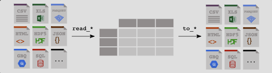

Pandas 处理什么样的数据？
大家在前面可能已经学习了python的用法，但是那些各种各样的数据该怎么用python来处理呢？或者说python跟其他像 SQL、JAVA或者R这些语言，在数据处理方面又有什么不同呢？
首先这个Pandas是Python的一个库，专门用于数据处理和分析。它提供了高性能、灵活和易于使用的数据结构，包括数据导入、清洗、转换、分析和可视化，是非常适用于处理结构化和表格化的数据。pandas在数据科学、金融分析、商业智能等领域得到广泛应用。对于不同的数据结构下面进行举例（附上相关案例链接）
表格数据
Pandas最常用于处理表格数据，例如CSV文件、Excel文件、数据库查询结果等。你可以使用Pandas读取这些数据，并对其进行各种操作，如过滤、排序、合并、聚合、计算统计指标等。
当使用Pandas处理表格数据时，你可以使用DataFrame这个主要的数据结构。DataFrame是一个二维的标记数组，类似于电子表格或SQL表。
Code
# 1. 导入pandas包 import pandas as pd# 2. 假设data数据 = {"calories" : [420 , 380 , 390 ],"duration" : [50 , 40 , 45 ]# 3. 假设df，然后调用pd(pandas包)，将数据转换为DataFrame格式 = pd.DataFrame(data)# 4. 打印df print (df)
calories duration
0 420 50
1 380 40
2 390 45
时间序列数据
Pandas提供了强大的时间序列功能，可以处理日期和时间相关的数据。你可以使用Pandas对时间序列数据进行重采样、滚动计算、时间窗口分析、时间序列绘图等操作。
Code
import pandas as pd= pd.to_datetime("13th of June, 2023" )print (date)
可以使用DateTimeIndex和TimedeltaIndex来表示时间索引和时间间隔。
Code
import pandas as pd# 创建一个包含日期范围的时间索引 = pd.date_range(start= '2023-01-01' , end= '2023-01-10' , freq= 'D' )# 创建一个DataFrame，并使用时间索引 = pd.DataFrame({'Value' : [10 , 20 , 30 , 40 , 50 , 60 , 70 , 80 , 90 , 100 ]}, index= date_range)# 查看数据的前几行 print (data.head())
Value
2023-01-01 10
2023-01-02 20
2023-01-03 30
2023-01-04 40
2023-01-05 50
Code
# 通过日期索引获取某一天的数据 = data.loc['2023-01-05' ]# 通过日期范围索引获取一段时间内的数据 = data.loc['2023-01-03' :'2023-01-07' ]# 使用日期的年、月、日等属性进行切片 = data[data.index.year == 2023 ]= data[data.index.month == 1 ]= data[data.index.day == 5 ]# 将数据按周进行重采样，计算每周的平均值 = data.resample('W' ).mean()# 将数据按月进行重采样，计算每月的总和 = data.resample('M' ).sum ()
缺失数据处理
Pandas提供了灵活的方法来处理缺失数据。你可以使用Pandas来检测和处理缺失值，填充缺失数据，或者根据缺失值进行数据筛选和计算。
Code
# 创建带有缺失数据的DataFrame = pd.DataFrame({'A' : [1 , 2 , None , 4 , 5 ],'B' : [None , 2 , 3 , None , 6 ],'C' : [1 , 2 , 3 , 4 , 5 ]})
Code
# 检测每个单元格是否为缺失值 = data.isnull()# 统计每列的缺失值数量 = data.isnull().sum ()# 统计整个DataFrame的缺失值数量 = data.isnull().sum ().sum ()
Code
# 删除包含缺失值的行 = data.dropna()# 删除全部为缺失值的列 = data.dropna(axis= 1 , how= 'all' )# 填充缺失值为指定的常数 = data.fillna(0 )# 使用缺失值前面的值进行前向填充 = data.fillna(method= 'ffill' )# 使用缺失值后面的值进行后向填充 = data.fillna(method= 'bfill' )
数据清洗和转换
Pandas可以用于数据清洗和转换的各种操作。你可以使用Pandas对数据进行重塑、合并、分组、变形等，以满足特定的分析需求。
Code
# 创建原始数据 = pd.DataFrame({'Name' : ['John' , 'Emily' , 'Michael' , 'Emma' ],'Age' : [25 , 30 , 35 , 28 ],'Gender' : ['M' , 'F' , 'M' , 'F' ],'Salary' : ['$5000' , '$6000' , '$4500' , '$7000' ]})
Code
# 去除重复的行 = data.drop_duplicates()# 去除列中的空格 'Name' ] = data_cleaned['Name' ].str .strip()# 将字符串列转换为数字列 'Salary' ] = data_cleaned['Salary' ].str .replace('$' , '' ).astype(int )# 删除缺失值所在的行 = data_cleaned.dropna()
Code
# 将字符串转换为日期时间类型 'Date' ] = pd.to_datetime('2022-01-01' )# 将分类变量转换为数值变量 'Gender' ] = data_cleaned['Gender' ].map ({'M' : 0 , 'F' : 1 })# 创建新的衍生变量 'Age_group' ] = pd.cut(data_cleaned['Age' ], bins= [0 , 20 , 30 , 40 , 50 ], labels= ['<20' , '20-30' , '30-40' , '40+' ])
数据的清洗和转换是pandas最常使用的功能，之后我们会逐步拆解，进行详细说明
数据可视化
Pandas集成了Matplotlib库，可以通过简单的接口生成各种统计图表和可视化图形，以便更好地理解和呈现数据。
Code
# 创建数据 = pd.DataFrame({'Month' : ['Jan' , 'Feb' , 'Mar' , 'Apr' , 'May' , 'Jun' ],'Sales' : [100 , 150 , 120 , 200 , 180 , 250 ],'Expenses' : [80 , 90 , 100 , 85 , 95 , 110 ]})
Code
# 折线图 = 'Month' , y= 'Sales' , kind= 'line' )
虽然pandas也可以画图，但是还是静态图形，之后我们会详细说明更加简洁和酷炫的可视化库 Plotly库
数据建模和分析
Pandas还支持数据建模和分析的操作。你可以使用Pandas进行数据建模、特征工程、数据预处理等，然后将数据传递给机器学习库（如Scikit-learn）进行模型训练和预测。网上看到不错的数据预测案例
如何导入/导出表格数据(xsl,csv,txt…)

读取本地数据
获取数据data.csv下载地址 ，将csv文件下载到本地。
Code
# 导入pandas包 import pandas as pd# 注意csv文件路径 = pd.read_csv('./example_data/data.csv' ) # 打印前五个 print (df.head())
Duration Pulse Maxpulse Calories
0 60 110 130 409.1
1 60 117 145 479.0
2 60 103 135 340.0
3 45 109 175 282.4
4 45 117 148 406.0
读取线上数据
线上数据地址
Code
= pd.read_csv('https://www.w3schools.com/python/pandas/data.csv.txt' )# 打印前五个 print (df.head())
Duration Pulse Maxpulse Calories
0 60 110 130 409.1
1 60 117 145 479.0
2 60 103 135 340.0
3 45 109 175 282.4
4 45 117 148 406.0
如何在DataFrame中选取数据？
在数据分析中，选取需要的数据进行处理和分析是很重要的。在Excel中，主要通过鼠标点选或拖拽来选取数据。
而在pandas中，我们也可以通过行列名、索引以及各种条件来筛选感兴趣的数据子集，并进行数据过滤、筛选、切片、分析和连接等操作。
Code
# 获取案例数据 import pandas as pd= pd.read_csv('https://raw.githubusercontent.com/pandas-dev/pandas/main/doc/data/titanic.csv' ) print (df.head(1 ))
PassengerId Survived Pclass Name Sex Age SibSp \
0 1 0 3 Braund, Mr. Owen Harris male 22.0 1
Parch Ticket Fare Cabin Embarked
0 0 A/5 21171 7.25 NaN S
本教程使用存储为 CSV 格式的泰坦尼克号数据集。以下是详细说明（改成折叠！！！！！）
PassengerId：每位乘客的Id。
Survived：指示乘客是否幸存。0是和1否。
Pclass：3 个机票类别之一：Class 1、Class2和 Class 3。
Name：乘客姓名。
Sex：乘客的性别。
Age：乘客的年龄。
SibSp：船上兄弟姐妹或配偶的数量。
Parch：船上父母或孩子的人数。
Ticket：旅客的客票号。
Fare：表示票价。
Cabin：乘客的客舱号。
Embarked：登船的港口。
选取特定列
通过列索引标签或以属性的方式可以单独获取 DataFrame的列数据，返回的数据为 Series结构。
假如我想知道每位乘客的姓名id（选取单列），df为数据表格，Name为列名
Code
# 方法一： 'Name' ]# 方法二： # 方法三： 'Name' ]
0 Braund, Mr. Owen Harris
1 Cumings, Mrs. John Bradley (Florence Briggs Th...
2 Heikkinen, Miss. Laina
3 Futrelle, Mrs. Jacques Heath (Lily May Peel)
4 Allen, Mr. William Henry
...
886 Montvila, Rev. Juozas
887 Graham, Miss. Margaret Edith
888 Johnston, Miss. Catherine Helen "Carrie"
889 Behr, Mr. Karl Howell
890 Dooley, Mr. Patrick
Name: Name, Length: 891, dtype: object
假如我想知道所有乘客的幸存情况（获取多列），我们可以通过两个中括号，可以获取多个列的数据。
Code
'Name' ,'Survived' ]].head()
0
Braund, Mr. Owen Harris
0
1
Cumings, Mrs. John Bradley (Florence Briggs Th...
1
2
Heikkinen, Miss. Laina
1
3
Futrelle, Mrs. Jacques Heath (Lily May Peel)
1
4
Allen, Mr. William Henry
0
内部方括号定义了一个 带有列名的Python列表 ，而外部方括号用于从 pandas 中选择数据
选取特定行
通过行索引获取行数据，冒号指定范围
假设想知道第三行，Laina小姐的信息（单行）
Code
# 选取从第二行到第三行到数据 2 :3 ]# df[2:5] 选取从第三行到第五行到数据
2
3
1
3
Heikkinen, Miss. Laina
female
26.0
0
0
STON/O2. 3101282
7.925
NaN
S
如果我不想按顺序这样选取多行数据呢？
如果想获取单独的几行，通过loc和iloc方法 来获取第二行Laina和第五行William的信息
注意在pandas中第0行才是第一行，所以切片要-1
Code
# iloc方法是按行索引位置选取数据，索引就是表格最左边的数字 2 ,4 ]]
2
3
1
3
Heikkinen, Miss. Laina
female
26.0
0
0
STON/O2. 3101282
7.925
NaN
S
4
5
0
3
Allen, Mr. William Henry
male
35.0
0
0
373450
8.050
NaN
S
Code
# loc方法是按行索引标签选取数据，因为这里索引的标签和位置相同，所以结果同上 2 ,4 ]]
2
3
1
3
Heikkinen, Miss. Laina
female
26.0
0
0
STON/O2. 3101282
7.925
NaN
S
4
5
0
3
Allen, Mr. William Henry
male
35.0
0
0
373450
8.050
NaN
S
根据条件筛选行列
假设我想知道十八岁以下的乘客信息
Code
"Age" ] < 18 ].head()
7
8
0
3
Palsson, Master. Gosta Leonard
male
2.0
3
1
349909
21.0750
NaN
S
9
10
1
2
Nasser, Mrs. Nicholas (Adele Achem)
female
14.0
1
0
237736
30.0708
NaN
C
10
11
1
3
Sandstrom, Miss. Marguerite Rut
female
4.0
1
1
PP 9549
16.7000
G6
S
14
15
0
3
Vestrom, Miss. Hulda Amanda Adolfina
female
14.0
0
0
350406
7.8542
NaN
S
16
17
0
3
Rice, Master. Eugene
male
2.0
4
1
382652
29.1250
NaN
Q
从里到外来拆解，首先需要先确定"Age"列，然后使用运算符>，选取十八岁以下的乘客。然后把这两操作在用方括号框起来，表明在数据df中操作，.head()选取前五行。
更好的数据可视化(Plotly)
前面我们有展示pandas自带的可视化效果，其实和matplotlib一样都是静态的图表（略显呆板…）
这边我们极力推荐使用plotly.express，只需几行代码就可以实现酷炫交互式可视化。
$ conda install -c plotly plotly
plotly.express是plotly的简化包，只需要1～2行就可以生成可视化图表，大家可以滑动鼠标，获取相对应的数据。
Code
# 可生成html进行展示 import plotly.express as px= px.bar(x= ["a" , "b" , "c" ], y= [1 , 3 , 2 ])'first_figure.html' , auto_open= True )
Code
# plotly离线版 import plotly.offline as py= True )= [1 , 2 , 3 , 5 , 6 ]= [1 , 4.5 , 7 , 24 , 38 ]= dict (x= x1, y= y1)= [trace1]